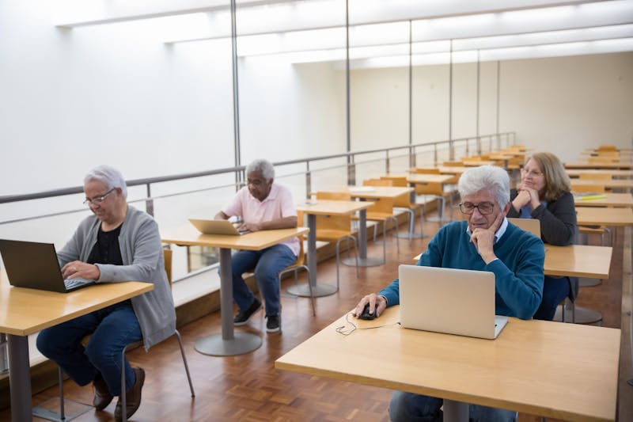

교육 기관과 함께합니다
교육 운영의 모든 것,
하나의 플랫폼에서
관리자, 강사, 수강생 각각에 최적화된 독립 포털로
복잡한 교육 운영을 간결하게 만듭니다.
다중 기관 관리
3단계 기관 트리 구조로 상위기관부터 단일기관까지 체계적으로 관리합니다. 각 기관은 독립적인 데이터 공간을 가지며, RLS 기반 행 수준 보안으로 데이터를 격리합니다.
6단계 역할 관리
시스템 관리자부터 수강생까지 세분화된 권한 체계. Magic-Link 초대 방식으로 안전하게 사용자를 온보딩합니다.
3개 독립 포털
관리자·강사·수강생 각각 최적화된 전용 SPA. 역할에 맞는 대시보드와 워크플로우를 제공합니다.
실시간 화상 수업
Google Meet 자동 연동으로 회의실 생성, 자동 녹화, 자막 설정까지. 수강생에게 링크가 자동 공유됩니다.

자동화 파이프라인
회의록 자동 수집, 녹화 영상 YouTube 업로드, 출석 상태 자동 전환. n8n 워크플로우와 pg_cron으로 반복 업무를 자동화하여 운영 부담을 줄입니다.
3단계 강의 개설
기본 정보 → 일정 설정 → 강사 배정. 자동 스케줄링과 과목 복제로 학기별 운영이 간편합니다.
누구도 소외되지 않는
교육을 만듭니다
시니어 학습자를 위한 큰 글꼴과 간결한 인터페이스, 외국인 학습자를 위한 14개 언어 지원. WCAG 2.2 AA 기준을 준수합니다.
시니어 모드
글꼴 20px 이상, 버튼 56px 이상, 고대비 색상으로 전환. 클릭 한 번으로 더 크고 선명한 화면을 제공합니다.
14개 언어 지원
한국어, 영어, 베트남어, 중국어, 일본어, 태국어 등 다문화 학습자의 모국어로 교육 환경을 제공합니다.
WCAG 2.2 AA 준수
색상 대비 4.5:1 이상, 키보드 네비게이션, 스크린리더 호환. 웹접근성 인증을 목표로 설계되었습니다.
각 역할에 맞는
최적의 경험
관리자, 강사, 수강생 모두 자신의 역할에 집중할 수 있는 전용 포털을 제공합니다.
관리자 포털
기관 관리, 사용자 초대, 강의 개설, 자료 검수, 통계 분석을 한 곳에서.
- KPI 대시보드
- CSV 일괄 업로드
- 자료 검수 프로세스
강사 포털
오늘의 수업, 출석 관리, 자료 업로드, Q&A 답변을 직관적으로.
- 원클릭 회의실 생성
- 드래그 앤 드롭 업로드
- 실시간 출석 체크
수강생 포털
오늘의 수업, 자료 다운로드, 출석 확인, 질문을 모바일에서도.
- PWA 모바일 앱
- 10분 전 수업 알림
- 출석 달력 시각화
현장에서 검증된
교육 플랫폼
실제 교육 현장의 담당자들이 전하는 도입 경험입니다.
"출석 관리에 매일 2시간씩 쓰던 것이 30분으로 줄었습니다. 특히 다국어 지원 덕분에 외국인 학습자 문의가 크게 줄었어요."
"수업 녹화가 자동으로 YouTube에 올라가고 회의록도 알아서 정리되니, 수업 준비와 복습 자료 만들기가 훨씬 수월해졌습니다."
"3개 하위 기관의 교육 현황을 한 화면에서 볼 수 있어서 보고서 작성이 간편해졌습니다. 데이터 격리도 확실해서 안심이에요."
우리 기관에 맞는
교육 플랫폼을 도입하세요
기관 규모와 요구사항에 맞춰 맞춤 제안을 드립니다. 데모 환경에서 직접 체험해 보실 수 있습니다.